Каркасные дома под ключ от производителя
Строим дома в Санкт-Петербурге и Ленинградской области от 2 500 000 руб. Фиксируем цену договором. Гарантия до 25 лет. Выбирайте дом своей мечты в каталоге с планировками, ценами и комплектациями!
13 лет
в загородном строительствеБолее 120
построенных домов